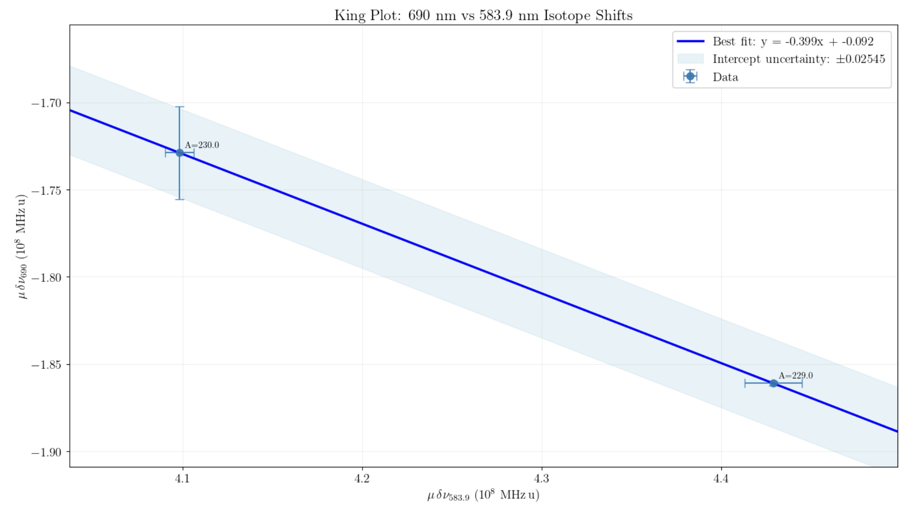
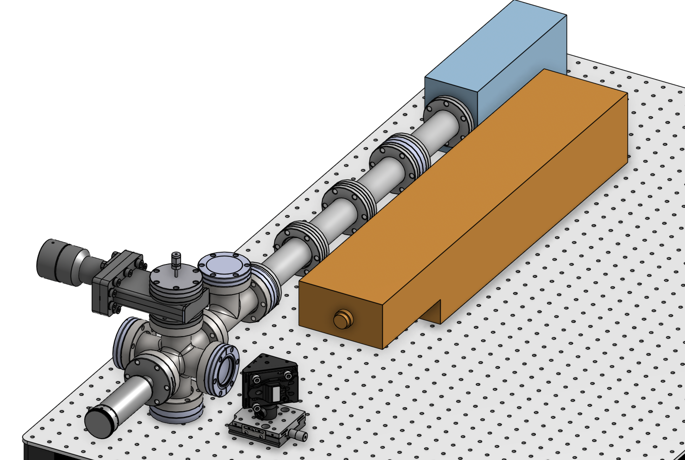
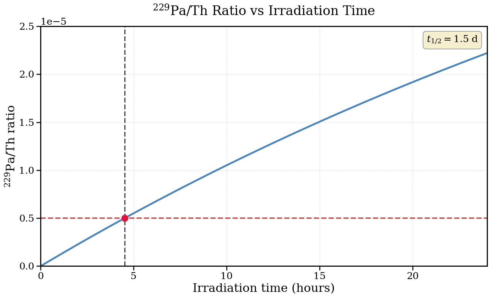
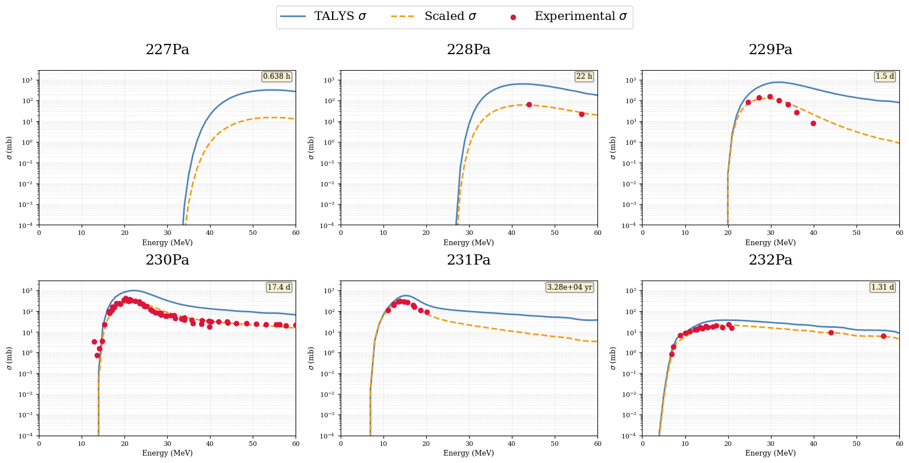
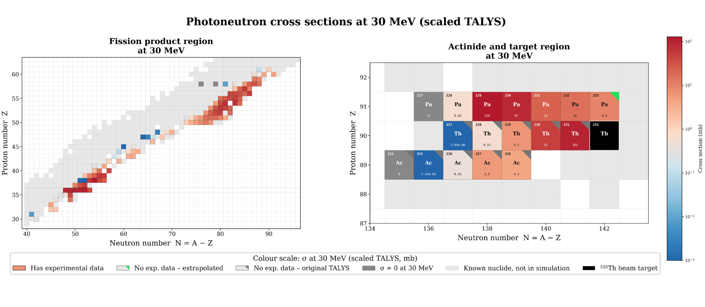
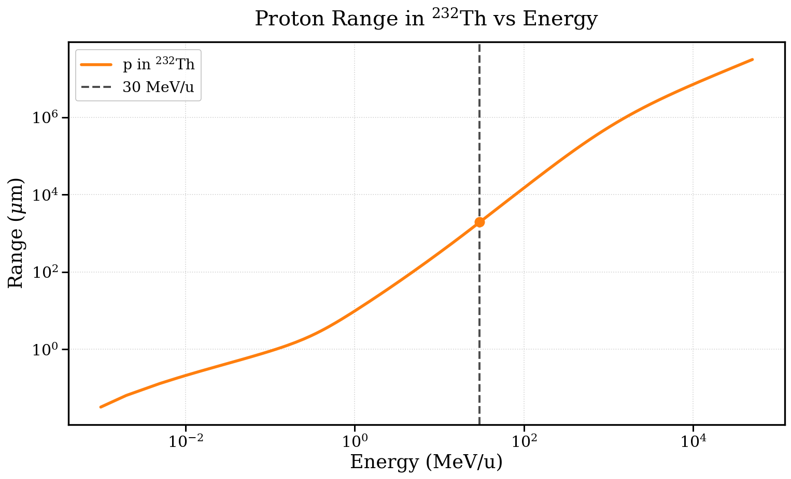
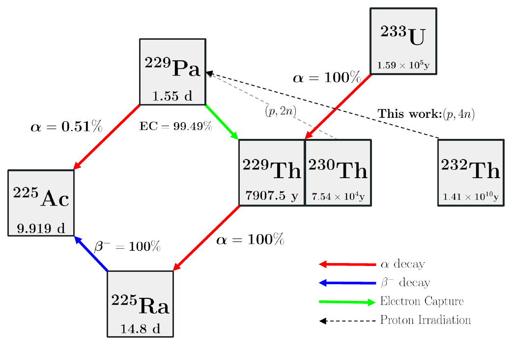
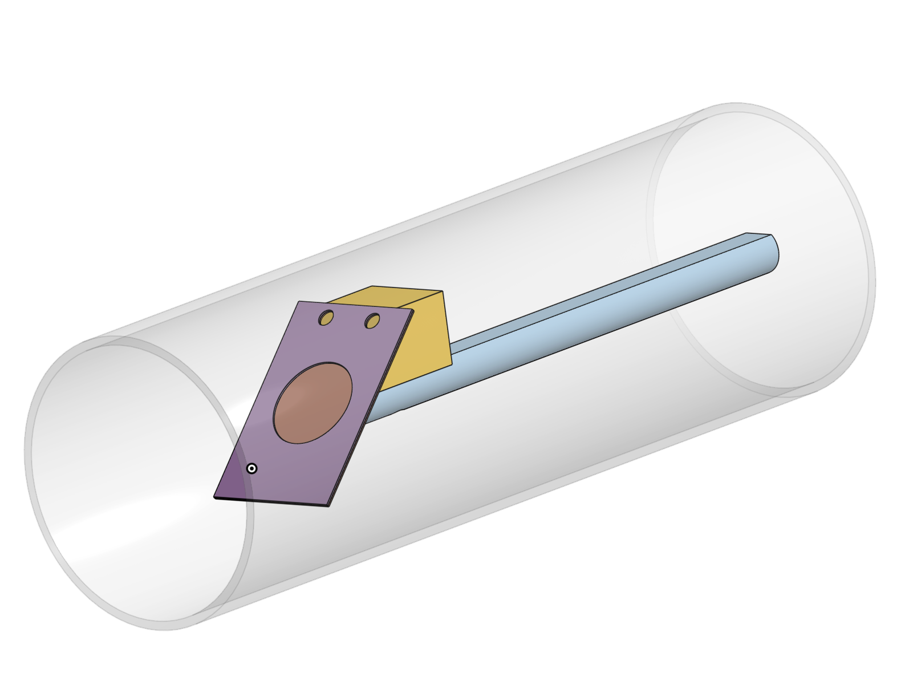
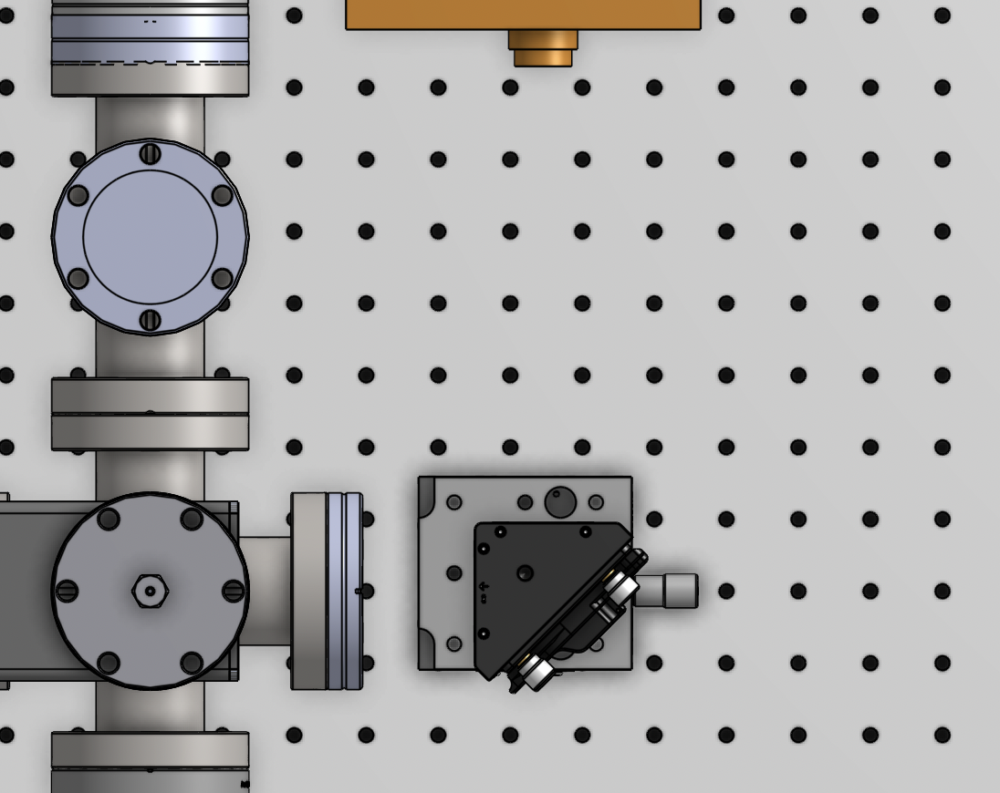
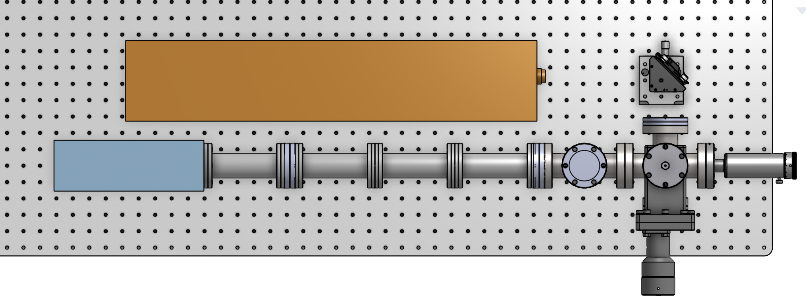

Research Intern, MIT Laboratory for Nuclear Science
Jun 2025 to present
I work on producing neutron-rich radioisotopes for next-generation electric dipole moment (EDM) experiments. So far that has meant two projects: estimating isotope shifts of thorium, which became a published technical report, and designing an experiment to produce protactinium-229 in-house.
Read the technical report (DSpace@MIT)
Timeline
- Jul 2025Organized a database of measured isotope shifts and used it to make King plots and look for nonlinearities.
- Aug to Sep 2025Estimated isotope shifts for thorium isotopes.
- Oct to Nov 2025Started designing a way to produce protactinium-229 in-house, and looked for thorium targets.
- Jan to Feb 2026Finalized the thorium report and published it on DSpace@MIT.
- Feb 2026 onwardDesigned the experimental setup and ran the production calculations.
- Summer 2026Planned irradiation at the MIT Cyclotron.
Project 1: Estimating thorium isotope shifts
Thorium isotopes are candidates for next-generation nuclear optical clocks and for searches for symmetry-violating effects, and both need accurate spectroscopy. An isotope shift is the small change in an atom's transition frequency from one isotope to another. It depends on the nuclear size (the field shift) and the nuclear mass (the mass shift). I started by organizing a database of published isotope shifts, and used King plots to compare transitions.
The problem is that for the 690 nm transition of Th3+, direct measurements exist only for 229Th and 230Th, relative to 232Th. To fill the gap, we compared that transition with the well-characterized Th+ transition at 583.9 nm in a King plot. Using published nuclear charge radii and quadrupole deformations, this gave the field-shift constant F and the mass-shift constant M for the 690 nm line.
With F and M in hand, we calculated the missing isotope shifts. For 227Th and 228Th we used measured changes in the mean-square charge radius, and for the other isotopes we estimated them from the nuclear quadrupole deformation coefficients of the FRDM model. The results are in a technical report published on DSpace@MIT.

| Isotope | Shift (MHz) |
|---|---|
| 224Th | −29296 (5585) |
| 225Th | −25840 (4930) |
| 226Th | −22113 (4219) |
| 227Th | −18631 (6238) |
| 228Th | −14970 (6181) |
| 231Th | −3742 (715) |
Project 2: Producing protactinium-229
Protactinium-229 is a good candidate for a non-zero EDM: nuclei with octupole deformation (a pear-like shape) can have an enhanced nuclear Schiff moment, which makes them a way to study CP violation. The problem is its half-life of only 1.5 days, compared with 32,760 years for protactinium-231, so it has to be produced fresh.
Our goal is to show that we can make it in-house, and to remeasure the 232Th(p,4n)229Pa production cross section. The plan has three steps:
- Irradiate ThF4 sputtering targets with 30 MeV protons at the MIT Cyclotron.
- Ablate the target with a pulsed 532 nm laser inside an ultra-high-vacuum chamber.
- Detect the PaF molecules with a residual gas analyzer (RGA) at the end of the chamber.

Calculations for the irradiation
The RGA can only pick out a very small amount of protactinium against the thorium, so I calculated how long to irradiate. About 5 hours gives a signal the RGA can see without being oversaturated.

To check that protactinium-229 is worth making, I calculated production cross sections with TALYS from 1 to 100 MeV, including (p,n) and fission reactions. The simulation returned over 150 isotopes. Because TALYS can be off by factors of 10, I scaled it to experimental data, and for isotopes without data I extrapolated from nearby isotopes. After removing isotopes with half-lives of an hour or less, or cross sections below 0.25 mb, 131 remained. At 30 MeV, the scaled cross section for 229Pa is 126 mb, higher than almost every other isotope.


I also used LISE++ to find how deep the protons travel into the target. That depth is about 1.935 mm in thorium, and scaling for the lower density of ThF4 gives about 3.6 mm.


Designing the setup
The experiment sits on an optical table: a laser comes in through a window, hits the sample on a linear-motion feedthrough, and the RGA sits at the end of the chamber. I designed the sample holder, a trapezoidal wedge that holds the sputtering target, in Onshape.
-->
Two fixes improved the first design:
- An off-axis parabolic mirror replaced the lens and cage rods, which gives more flexibility in aiming the laser.
- The RGA is protected from oversaturation. The RGA can take at most 1.25×1011 singly charged ions per second, and the first design would have exceeded that. Moving the RGA from 2.46″ to 22.14″ from the sample and adding two 5 mm irises cut the rate to about 1.5×109 ions per second, 80 times below the limit.


Radiation report
I also wrote a radiation report for the experiment. It calculates the activity of every isotope produced and the dose for each step, from removing the target from its holder to packaging the waste. The estimated dose for someone running the experiment is 0.8 mSv per year, compared with about 6 mSv per year from natural background radiation.
What's next
- Finish a full report on the experiment, which will be uploaded to the MIT library.
- Expand the thorium report with protactinium isotope shifts, toward a full publishable paper.
- Run the irradiation and the experiment.